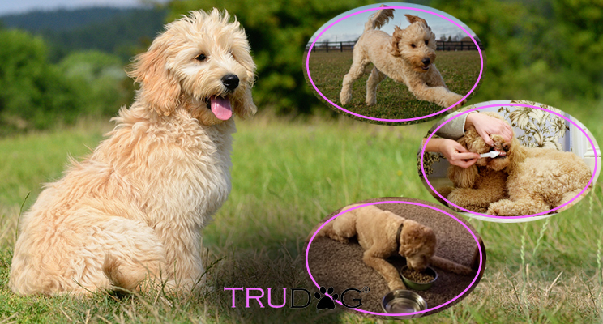

About Wafu
Wafu est le plus beau chien du monde. Il aime beaucoup courrir et jouer. Parfois il aime se vautrer dans la boue ou manger de la merde.
Wafu dans sa vie de tous les jours
Caractéristiques de Wafu
- Il joue.
- Il devrait se brosser les dents.
- Il mange.
Ses amis
Il apprécie particulièrement jouer avec des amis de son espèce mais en cachette il joue aussi avec des loups lorsque les autres chien ne le voient pas. Cliquez pour en apprendre d'avantage plus bas pour en apprendre davantage sur les loups.
- Les loups
- Les Border Collie
- Nous!